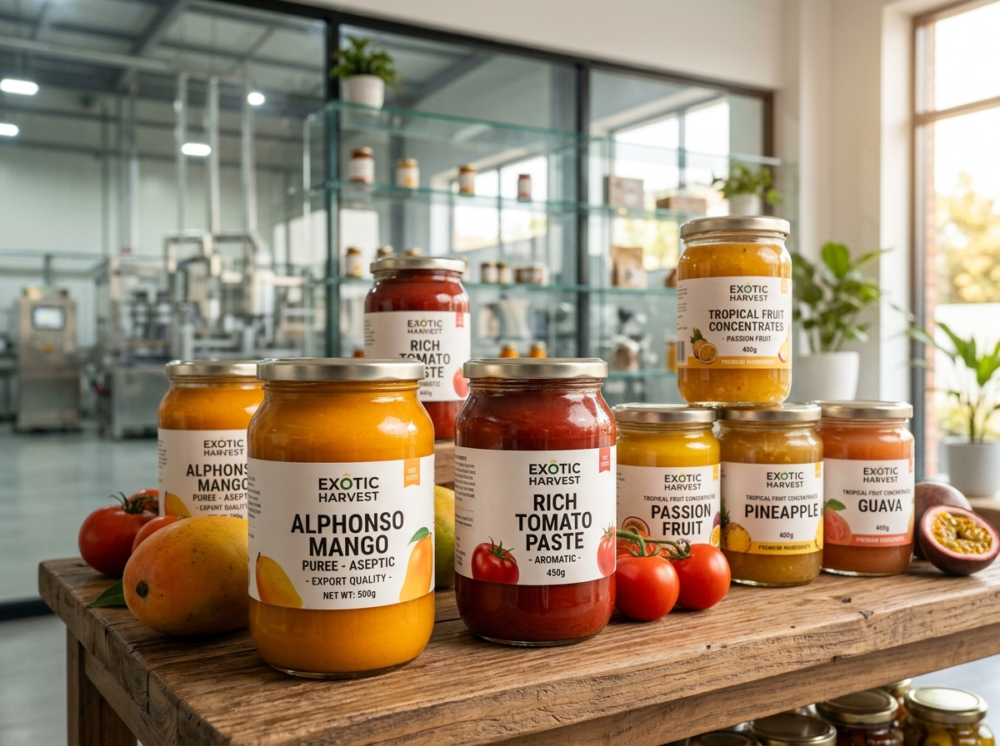

A World of Quality,
Sourced the Shipyon Way.
A curated portfolio of export commodities, sourced from audited origins and certified for international trade. Consistent grade standards, laboratory verifications, and dependable multimodal container dispatches.
Explore the Shipyon Collection.
Quality that begins in regional soil and stays consistent through temperature-controlled multimodal shipping.
Freshness, Rooted in Origin.
Farm-fresh vegetables, carefully harvested from audited growing clusters across South India. Cold-chain harvested to lock in crispness, natural nutrition, and optimal market arrival life.
- ✓ Moisture: Under 12% • APEDA certified
- ✓ Packing: 5kg, 10kg, 25kg mesh & ventilated corrugated boxes
- ✓ Transit: Pre-cooled reefer containers (+4°C to +13°C)

Nature’s Finest.
Harvested at precise maturity indices, washed, hot-water treated, and packaged under temperature regulation to guarantee sweetness and shelf viability.
- ✓ Brix Index: 18° to 22° natural sweetness
- ✓ Grading: Count 6 to 12 per 3.5kg / 5kg carton
Authentic Flavour.
Direct grower alliances delivering certified curcumin concentrations, essential oil density, and vibrant natural color profiles.
- ✓ Curcumin: 3.5% to 5.0% verified
- ✓ Piperine: Min 5.5% • Density 550g/l

Processed Nutrition.
Aseptic fruit purees, concentrates, virgin cold-pressed oils, and dehydrated culinary staples processed in international-grade facilities.
- ✓ Packaging: 215kg aseptic drum / vacuum jars
- ✓ Standards: FSSC 22000 • US FDA Registered
Castings & Textiles.
Precision ductile iron castings, machined forgings, and combed ring-spun yarns connecting enterprise buyers to South India's industrial backbone.
- ✓ Metallurgy: EN-GJS-400 to EN-GJS-700
- ✓ Textiles: Ne 20s to Ne 80s combed yarns
Every Product. One Shipyon Standard.
Carefully sourced, scientifically inspected, and packaged to exceed the demands of global buyers.
Sourced With Purpose
We work directly with verified grower cooperatives and registered mills to ensure 100% honest batch provenance.
Quality, Always
Optical Sortex sizing, moisture profiling, and accredited laboratory chemical testing eliminate defect variance.
Prepared for Trade
High-burst corrugated packaging, rapid pre-cooling, fumigated dunnage, and sovereign APEDA clearances.
Delivered With Care
Continuous IoT reefer telemetry, guaranteed container carrier allocations, and destination customs support.
Request Product Specifications & Allocation.
Our trade desks provide detailed certificates of analysis, minimum order quantities, and freight schedules within 24 hours.